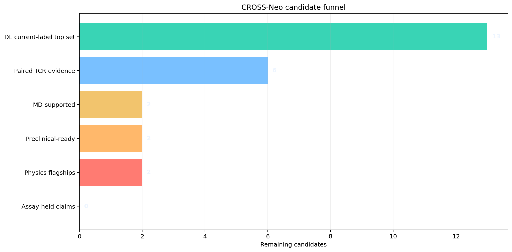

Boundary
The atlas ranks candidates and plans escalation. It does not prove immunogenicity, activation, killing, or clinical utility.
Candidate Funnel

Funnel Table
| stage | count | criterion |
|---|---|---|
| DL current-label top set | 13.000 | Top-13 decision set |
| Paired TCR evidence | 6.000 | paired TCR evidence count > 0 |
| MD-supported | 2.000 | MD label moderate or stronger |
| Preclinical-ready | 2.000 | preclinical readiness >= 0.75 |
| Physics flagships | 2.000 | physics tier == P0_FLAGSHIP_PHYSICS |
| Assay-held claims | 0.000 | real assay labels present |
Flagship Board
| lead | peptide | hla 4digit | md label | md score | preclinical readiness | cross neo i readiness | physics tier | physics priority score | launch sequence | endpoint step | next decision | blocked claim |
|---|---|---|---|---|---|---|---|---|---|---|---|---|
| TP53_R175H_HLA_A0201 | HMTEVVRHC | HLA-A*02:01 | MD_VERY_STRONG | 0.822 | 0.935 | 0.606 | P0_FLAGSHIP_PHYSICS | 0.839 | endpoint energy now -> PMF if endpoint supports mutant specificity -> FEP only after WT mapping is clean | compare mutant vs WT vs decoy endpoint energies over ensemble frames | launch WT/decoy-controlled HLA stability + multimer/activation assays | immunogenicity until activation exceeds WT/decoy controls |
| KRAS_G12D_HLA_C0802 | GADGVGKSAL | HLA-C*08:02 | MD_MODERATE | 0.577 | 0.797 | 0.611 | P0_FLAGSHIP_PHYSICS | 0.656 | endpoint energy now -> PMF only if TCR-pMHC model stays stable | compare mutant vs WT vs decoy endpoint energies over ensemble frames | launch WT/decoy-controlled HLA stability + multimer/activation assays | immunogenicity until activation exceeds WT/decoy controls |